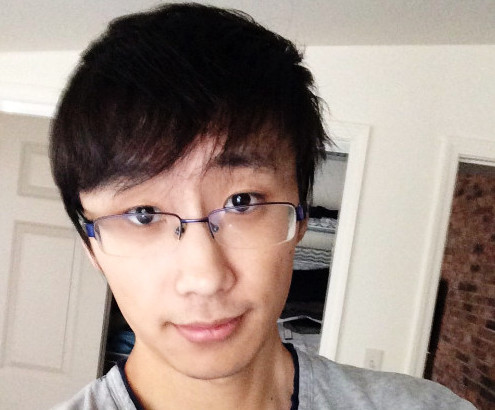
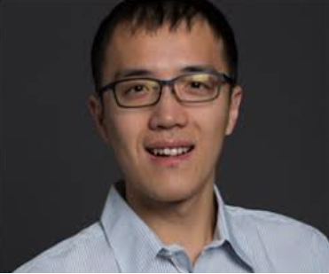

Cheng-Hsiang Chiu
Ph.D. student, Department of ECEUniversity of Utah, Salt Lake City, UT, USA, 84112
Office: 4142 Merrill Engineering Building (MEB)
BS (CCU-EE), MS (NCTU-CM & EPFL-Informatique)
I am a Ph.D. student in the Department of ECE at the University of Utah, working on an open-source project, taskFlow, and advised by Prof. Tsung-Wei Huang. I used to investigated in varius projects including edge computing, data analysis, privacy protection and streaming system. During my leisure time, I enjoy playing badminton.
Recent Update
Current Project

Taskflow: A General-purpose Parallel and Heterogeneous Task Programming System
Taskflow helps C++ developers quickly and efficiently write parallel and heterogeneous programs with high performance and simultaneous high productivity.
Past Projects

Energy efficient edge computing in Arctic
Energy efficient edge computing devices reduce power consumption of wildlife classification platform in Arctic tundra.

Data visualization and analysis
Parallel simulations calculate power data, two-dimension materials and soil classification and present analysis with suitable visualizations.
Conference Papers
- Der-Cherng Liaw, Jing-Hong Lai, Cheng-Hsiang Chiu, and Jia-Hong Liao, "A Wireless Sensor Network Platform for Indoor Surveillance System," International Conference on System Science and Engineering, 2011.
- Der-Cherng Liaw, Yi-Hung Hsieh, Jing-Hong Lai, and Cheng-Hsiang Chiu, "A Network Topology Design for Structural Health Monitoring," Asian Control Conference, 2011.
- Der-Cherng Liaw, Chia-Wei Yeh, Cheng-Hsiang Chiu, Chia-Ming Chang, and Hsiao-Jen Hsieh, "A Load Balancing Scheme for Web Server Design," International Conference on System Science and Engineering, 2011.
- Der-Cherng Liaw, Cheng-Hsiang Chiu, Chia-Wei Yeh, Chia-Ming Chang, and Hsiao-Jen Hsieh, "A Server Load Balancing Design for Peer-To-Peer Network," International Conference on Mechanical Engineering and Technology, 2011.
- Cheng-Hsiang Chiu, Pang-Chan Hung, Jen-Hui Chuang, and Shing-Lu Huang, "Object Tracking under Sensing Lighting Equipments," IEEE Conference on Industrial Electronics and Applications, 2010.
- Yi-Yuan Chen, Yuan-Yao Tu, Cheng-Hsiang Chiu, and Yong-Sheng Chen, "An Embedded System for Vehicle Surrounding Monitoring," IEEE Conference on Power Electronics and Intelligent Transportation System, 2009.
Journal Papers
- Yu-Cheng Chiou, Tuza Adeyemi Olukan, Mariam Ali Almahri, Harry Apostoleris, Cheng- Hsiang Chiu, Chia-Yun Lai, Jin-You Lu, Sergio Santos, Ibraheem Almansouri, and Matteo Chiesa, "Direct Measurement of the Magnitude of van der Waals interaction of Single and Multilayer Graphene," ACS LANGUMIR, 2018
Semester Project Reports
- Cheng-Hsiang Chiu, "Bootstrapping recommender systems with the crowdsourcing II," École Polytechnique Fédérale de Lausanne, 2015
- Cheng-Hsiang Chiu, "Bootstrapping recommender systems with the crowdsourcing," École Polytechnique Fédérale de Lausanne, 2014
Thesis
- Cheng-Hsiang Chiu, "Protection against Data Profiling by Adversarial Cloud Applications," Master Thesis, École Polytechnique Fédérale de Lausanne (EPFL), Switzerland, 2016
- Cheng-Hsiang Chiu, "Process control in Streaming Server," Master Thesis, National Chiao Tung University, Taiwan, 2007
Conference Reviewer
- ACM/IEEE Design Automation Conference (DAC)
- ACM/IEEE International Conference on Computer-Aided Design (ICCAD)
- ACM/IEEE Asia and South Pacific Design Automation Conference (ASP-DAC)
- ACM International Symposium on Physical Design (ISPD)
- ACM International Workshop on Timing Issues in the Spec and Synthesis of Digital Systems (TAU)
Journal Reviewer
- ACM Transactions on Design Automation of Electronic Systems (TODAES)
- IEEE Transactions on Computer-aided Design of Integrated Circuits and Systems (TCAD)
- IEEE Transactions on Very Large Scale Integration Systems (TVLSI)
- IEEE Transactions on Big Data (TBD)
- Integration, the VLSI Journal
- Biomicrofluidics, American Institute of Physics
Organizer
- Co-char, IC/CAD Contest at IEEE/ACM ICCAD, 2020
- Publicity Chair, International Workshop on Logic Synthesis (IWLS), 2020
- Chair/Co-chair, ACM SIGDA CADathlon International Programming Contest, 2018-2020
- Chair, VSDOpen Online EDA Conference, 2018
- Co-chair, ACM TAU Timing Analysis Contest, 2018
Program Committee
- IEEE/ACM International Conference on Computer-aided Design (ICCAD), 2019-2020
- IEEE/ACM Asia and South Pacific Design Automation Conference (ASPDAC), 2019-2020
- IEEE International Conference on Computer Design (ICCD), 2020
- ACM TAU, 2020
- The C++ Conference (CppCon), 2019
- Champion of the IEEE/MIT/Amazon HPEC Sparse Deep Neural Network Challenge, 2020 (Champions)
- Second Place, Open Source Software Competition (Taskflow), ACM Multimedia Conference, 2019
- ACM SIGDA Outstanding PhD Dissertation Award, 2019 (ACM SIGDA OPDA)
- Best Tool Award (OpenTimer), Workshop on Open-source EDA Technology, 2018 (WOSET Winner)
- Best Open Source Software Award (DtCraft), ACM Multimedia Conference, 2018 (ACM MM Awards)
- Best Poster Award (Taskflow), the Official C++ Conference, 2018
- Second and First Place, ACM/SIGDA CADathlon Programming Competition, 2014 and 2017 (CADathlon)
- First, Second, and First Place, ACM TAU Timing Contest, 2014 through 2016 (TAU Contest)
- Yi-Min Wang and Pi-Yu Chung Endowed Research Award, UIUC, IL, USA, 2016 (ECE Graduate Award)
- Rambus Computer Engineering Research Fellowship, UIUC, IL, USA, 2015-2016 (ECE Fellowship)
- A. Richard Newton Young Student Fellow, ACM/IEEE Design Automation Conference, 2009, 2011, and 2014
- Study Abroad Fellowship, Ministry of Education, Taiwan, 2012-2014
- Microelectronics and Computer Development Fellowships, UT Austin, TX, USA, 2012-2013
- Best Paper Award, Workshop on Synth and System Integration of Mixed Info Technology, 2012 (SASIMI Award)
- Second Place, ACM/Microsoft Student Research Competition Grand Final, 2011 (ACM News)
- Best Master Thesis Award, Chinese Institute of Electrical Engineering, 2011
- Best Master Thesis Award, IEEE Tainan Section (TIEE Award), 2011
- Best Master Thesis Award, Institute of Information and Computing Machinery, (IICM Award), 2011
- First Place, ACM/SIGDA/Microsoft Student Research Competition, 2010 (ACM News)
- Outstanding Student Scholarship, Garmin Corporation, Taiwan, 2010
- Outstanding Graduate Fellowship, National Cheng Kung University, Taiwan, 2010 (CS Graduate Fellowship)
- EDA Scholarship, SpringSoft Education Foundation, 2009 and 2010
- Outstanding Engineering Student Fellowship, Chinese Institute of Engineers, Taiwan, 2010 (CIE Fellowship 2010)
- Third Place, National Collegiate Cell-Based IC Design Contest, Ministry of Education, Taiwan, 2010
- First Place, National Collegiate Nano Device CAD Contest, Nano Device Laboratories, Taiwan, 2009
- Third Place, National Collegiate Programming Contest, Ministry of Education, Taiwan, 2009
- Travel Grant Award, Foundation for the Advancement of Outstanding Scholarship, Taiwan, 2009
- Second Place, National Collegiate IC/CAD Contest, Ministry of Education, Taiwan, 2008 (CAD Contest 2007)
- Presidential Award, Department of Computer Science, National Cheng Kung University, Taiwan 2007
{kind=link}
University of Utah
University of Illinois at Urbana-Champaign
THANK YOU ALL!
I could not come this far without the following people who have supported, motivated, and inspired me to continue growing:
- Pao-I Chen, my beloved wife
- Hui-Fei Hu, Ming-Ching Huang, and Sheng-Yi Huang, my beloved family
- Martin Wong, my PhD advisor
- D. Chen, W.-M. Hwu, and R. Rutenbar, my PhD committee
- Tsung-Yi Ho, my master advisor
- Jhih-Chian Wu, my roommate during my PhD life
- David Z. Pan, UT Austin
- Krishnendu Chakrabarty, Duke University
- Chun-Yao Wong, NTHU
- Y.-W. Chang and Iris H.-R. Jiang NTU
- Bei Yu, Michael R. Lyu, CUHK
- Xiaoqing Xu, ARM
- Benny Tseng, my roommate at UT Austin
- Marco and Daniele, my colleague at Citadel LLC
- Jin Hu, M.-C. Kim, D. Sinha, N. Venkateswaran, L. Stok, and K. Kalafala, my colleague at IBM
- P. V. Srinivas, my colleague at Mentor Graphics
- Li-Da Huang, my landlord at Austin
- Chun-Xun Lin, Guannan Guo, H. Tian, L. Hwang, Z. Xiao, D. Guo, T.-Y. Lai, and I.-J. Liu, my colleagues at UIUC CAD group
- Yuting Chen Wu, UIUC
- Chen-Hsuan Lin, Google
- Kunal Ghosh, director of VSD
- Billy Lee, NCTU
- Igor Keller, Cadence
- George Chen and Jignesh, Intel
- Jingtong Hu, U Pitt
- Andreas Olofoson, program manager at DARPA
- Bill Swartz, TimberWolf and UT Dallas
- Pierre-Emmanuel Gaillardon, my Utah Colleague
Research Grants
I am grateful for the following organizations to support my research:
- PI, "OpenTimer and DtCraft," $427K, DARPA, 2018-2019 (University of Illinois)
PhD Students
Cheng-Hsiang Chiu
(PhD@Utah 20-)Dian-Lun Lin
(PhD@Utah 20-)External Student Collaborators
I am blessed to collaborate with the following students (supervised by Prof Martin Wong):

Guannan Guo
(PhD@UIUC 17-)